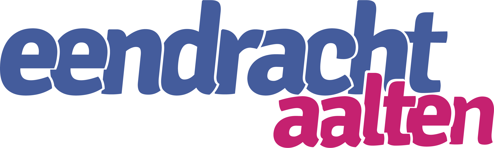

Verbinden met de tablet…
Tip: leg het blad plat in goed licht en vul het beeld. Liever een scan-app (bijv. Genius Scan) die het blad rechttrekt? Scan daar, sla op als foto en kies hier Uit galerij.

Tip: leg het blad plat in goed licht en vul het beeld. Liever een scan-app (bijv. Genius Scan) die het blad rechttrekt? Scan daar, sla op als foto en kies hier Uit galerij.